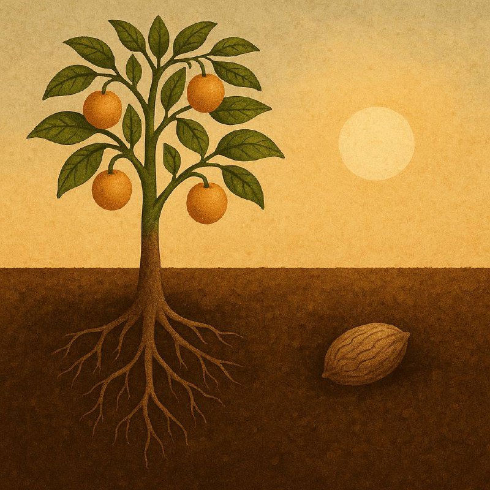

Икки дона уруғ ибрати

Баъзан ҳаётимизда иккита йўл бор: бири — хавфлироқ, лекин ўсишга олиб борадиган; иккинчиси — хавфсизроқ, лекин чўқишга маҳкум бўлган.
Бир куни иккита дона уруғ ҳосилдор тупроқда ёнма-ён ётарди. Биринчи дона дедики:
— Мен ўсмоқчиман! Илдизларимни ерга чуқур киритиб, қийинликлардан ўтиб, қуёшни кўрмоқчиман. Яшнаб, мева бермоқчиман.
Иккинчи уруғ эса шундай жавоб берди:
— Мен қўрқаман. Ер қаттиқ, ёмғир ёғса, қор ёғса, шамол бўлсачи? Яхшиси, шу ерда тинчгина иссиққина ётаман.
Вақт ўтди. Биринчи уруғ чиройли дарахтга айланди, унинг соясида одамлар дам олди, мевалари бошқаларни бахтли қилди.
Иккинчи дона эса ҳеч ўсмади — тупроқда ётиб қуриди, чириди, йўқолди.
Ҳаёт ҳам шундай:
Кимки илдиз отишдан, ҳаракат қилишдан, хавфга юз тутишдан қўрқмаса — у ўсади, мева беради, натижага эришади, бахтга етади.
Кимки “ҳозир эмас”, “мен тайёр эмасман” “ундай бўлсачи - бундай бўлсачи”деб иккиланса, қўрқса — ўша ернинг ўзида қолиб кетади.
Ҳақиқий хавф — уриниб кўриш эмас, балки ҳеч нарса қилмасликдир.
Румий айтганидек - Бесабабдин сабаб ҳам бўлмас пайдо!
Қўрқманг ўсишдан. Иложи борича илдиз отинг, ҳаракат қилинг, шу ерда, ҳозирнинг ўзида.
Тухм ерга кириб чечак бўлди,
Қурт жондин кечиб ипак бўлди.
Лола тухмича ғайратинг йўқму?!
Пилла қуртича ҳимматинг йўқму?!
/Алишер Навоий/
Оддий бир тухум ерга киргач, гўзал гулга айланиб кишиларнинг кўзини қувнатади; оддийгина бир қурт ҳам жонидан кечиб бўлсада, одамларга наф етадиган қимматбаҳо ипак шаклига келади. Эй инсон, сенда лоланинг тухмичалик ғайрат, пилла қуртичалик ҳиммат йўқми?! Шу жонзотларчалик ҳам ҳимматлик бўлолмайсанми?
Уруғ нега ерга киришини аниқласак. Сабаби - Муҳаббат туфайли. Чунки муҳаббат сўзи "ҳибба" ўзагидан келиб чиққан ва "устига тупроқ тортилган уруғ" маъносини англатади. Тухум ерга кирсагина гул бўла олади. Демак, тухумда муҳаббат борлиги учун ерга кирган ва гўзал гулга айлана олган!
Инсон ҳам танлаган йўлига, касбига муҳаббат қўя олсагина унга ғайрату шижоат, ҳиммат билан кириша олади ҳамда улкан марраларга эришади, ўзгаларга ҳам манфаат етказади!
Аллоҳ амалда собит бўлган, ҳаракатдаги инсонга барака беради.